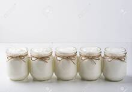

Volver al inicio
YOGURT CASERO
Ingredientes
-
1 Litro de leche
-
1 Yogurt natural pequeño
Paso a paso
- Colocar la leche en una olla a fuego medio. No te muevas de al lado de la olla y revolvé de vez en cuando. La temperatura de la leche debe subir a 80ºC aproximadamente, o sea, un rato antes de que hierva. Si no tenés un termómetro de cocina (como yo), mirá el borde de la leche: cuando se le empiezan a formar pequeñas burbujas, ni bien empiecen, la sacás del fuego.
- Mezclar un cucharón de esta leche tibia con el pote de yogurt natural. Remover bien hasta unir.
- Llevar la mezcla de yogurt y leche a la olla, con el resto de la leche y unir, revolviendo.
- Colocar toda la mezcla de leche y yogurt en un frasco grande de un material que pierda poco el frío (vidrio o metal están bien, en plástico también saldrá, pero mejor vidrio o metal).

- Envolver el recipiente con una frazada o con una toalla. Colocar un repasador limpio en la parte de arriba y NO tapar con la tapa del frasco.
- Llevar el yogurt casero envuelto a un lugar cerrado

- Dejar así entre 6 y 12 horas. Como explico arriba, a las 6 horas ya estará listo, pero con un poco más de tiempo mejorará su textura.
Resultado final